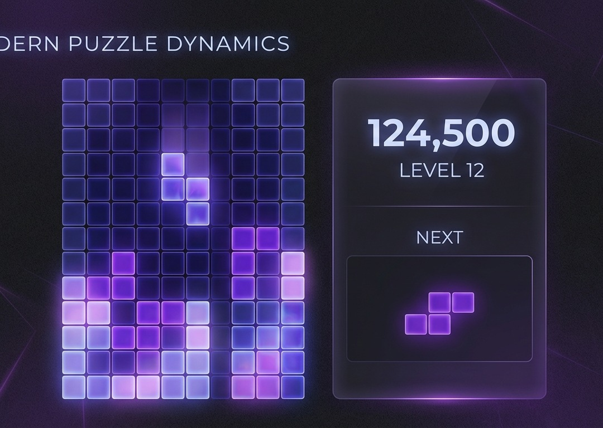

RACE Prompting
I can open my Tetris game in Google Gemini and write a RACE prompt that changes the colour theme of the blocks.
I can write a detailed RACE prompt that adds a sound effect and evaluate whether the A.I. output matches my Expectation.
I can explain what each letter in RACE stands for and describe why giving the A.I. a Role, Action, Context, and Expectation produces better output.
1. Prompt Quality
We learned the difference between a one-shot prompt — one clear, detailed instruction — and a bad prompt that's vague or missing key information.
2. Hands-On
We used Google Gemini's Canvas mode to generate a working Tetris game — the same game we'll modify today!
Today we level up — structured RACE prompts to modify our game.
One big set of instructions all at once.
A structured conversation with A.I.
Role — Action — Context — Expectation
Every time you prompt the A.I., think about four things:
Who should the A.I. be?
A game developer, a sound designer, a colour expert...
What do you want it to DO?
Change colours, add a sound, build a feature...
What does the A.I. need to know?
This is a Tetris game in Canvas mode using React...
What should the result look like?
A short retro beep, distinct colour shades...
R — A — C — E = Better prompts, better results!
Before you type anything into Gemini, PLAN your prompt using RACE:
Who should the A.I. be?
What do you want it to do?
What does the A.I. need to know?
What should the result look like?
Evaluate the output
3... 2... 1... Send!

Change your Tetris block colours using a RACE prompt.
Add a sound when a row clears using a RACE prompt.
Add a bomb block after 5 rows are cleared.
Remember: PLAN your prompt using R-A-C-E before you type!
Check your work
If it didn't work...
Write another RACE prompt. This time, be more specific in your Expectation or Context.
Debug Tip
Colours wrong? Make your Expectation clearer.
Sound too loud? Adjust your Context or Expectation.
I successfully modified my Tetris game using a RACE prompt.
Yes / NoI can explain what each letter in RACE stands for.
Yes / NoThe A.I. output matched my Expectation.
Yes / NoI had to write more than one prompt to get the result I wanted.
Yes / NoToday you learned RACE prompting — a framework for getting better results from A.I. every time.
Keep levelling up! 🚀
Slide 12: Tetris game (purple theme) — screenshot generated in Google Gemini Canvas
Google Gemini is a registered trademark of Google LLC. Tetris is a registered trademark of The Tetris Company.